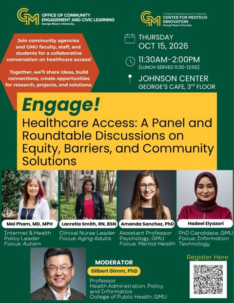

Lybarger
Lybarger 
About the Lab
We are a natural language processing lab building AI systems that improve how health information is understood, communicated, and exchanged. Our work spans extracting clinical information from medical records, such as social determinants of health, symptoms, and findings from imaging reports; simplifying complex health information for patients; and developing conversational agents for clinical and mental health settings. Across these efforts, we prioritize methods that are trustworthy, equitable, and grounded in real-world healthcare needs.
Prospective PhD students
I expect to admit at least one PhD student to start in fall 2027. Admission runs through the PhD in Information Technology program, not through me, so apply there first.
If you want me to see your application, email klybarge@gmu.edu with "PhD 2027" in the subject line. Introduce yourself, say what you want to work on, and attach your CV. Ideas close to our current work and ideas that point somewhere new are both welcome. I read these in batches and start replying in late fall. Silence before then is about my schedule, not your application.
Projects & Research Areas
Conversational AI for Depression Management Funded
With Dr. Farrokh Alemi, evaluating whether large language models can give trustworthy guidance on antidepressant selection. PCORI-funded. Project details →
-
Journal of Biomedical Informatics · 2026 Under review
Causal AI Reasoning: Direct Effects Multiplicative Inference Algorithm
-
JMIR AI · 2026 Under review
Advancing AI Trustworthiness Through Patient Simulation: Risk Assessment of Conversational Agents for Antidepressant Selection
-
Health Care Management Science · 2025
Causal Networks Guiding Large Language Models: Application to COVID-19
Understanding Chronic Pain through Language Funded
Capturing patients' lived experience of chronic knee pain from motivational-interviewing transcripts, with annotation methods and extraction models built for them. NIH-funded. Project details →
-
CL4Health @ NAACL · 2025
Capturing Patients' Lived Experiences with Chronic Pain through Motivational Interviewing and Information Extraction
-
NCUR · 2026 Poster
Capturing the Lived Experiences of Individuals with Chronic Pain through Motivational Interviewing
-
NCUR · 2026 Poster
Extracting Biopsychosocial Insights from Motivational Interview Transcripts on Chronic Pain Using Natural Language Processing
Health Literacy & Text Simplification
Making health information easier for patients to understand: annotated corpora for cancer education, readability-controlled question answering, and efficient extraction for health-communication materials. Area details →
-
Journal of Biomedical Informatics · 2024
Health Text Simplification: An Annotated Corpus for Digestive Cancer Education and Novel Strategies for Reinforcement Learning
-
PLOS Digital Health · 2026
Efficient Information Extraction Using LLMs and Knowledge Distillation: A Study on HPV Health Communication
-
TSAR Workshop · 2025
Evaluating Health Question Answering Under Readability-Controlled Style Perturbations
-
NCI Junior Investigator Meeting · 2024 Poster
Health Text Simplification: An Annotated Corpus for Digestive Cancer Education & Novel Strategies for Reinforcement Learning
NLP for Correctional & Legal Records
Extracting information from correctional and legal case records: probation and parole supervisory notes, and handwritten assault and violence reports. Area details →
-
Federal Probation · 2023
Exploring Probation and Parole Records Using Natural Language Processing: A Case Study of Supervisory Condition Notes
-
AMIA Symposium Workshop · 2024 Poster
Optical Character Recognition for Information Extraction from Handwritten Assault and Violence Reports
Emerging Directions
Early-stage lines of work, one paper each so far: jailbreak resistance for protected LLMs, and diversity-aware retrieval-augmented generation. Area details →
-
EMNLP · 2026 In press
ATTCK-R: Knowledge-Aware Long-Horizon Jailbreaking for Protected LLMs
-
Findings of EACL · 2026
DF-RAG: Query-Aware Diversity for Retrieval-Augmented Generation
Explore all projects & research areas